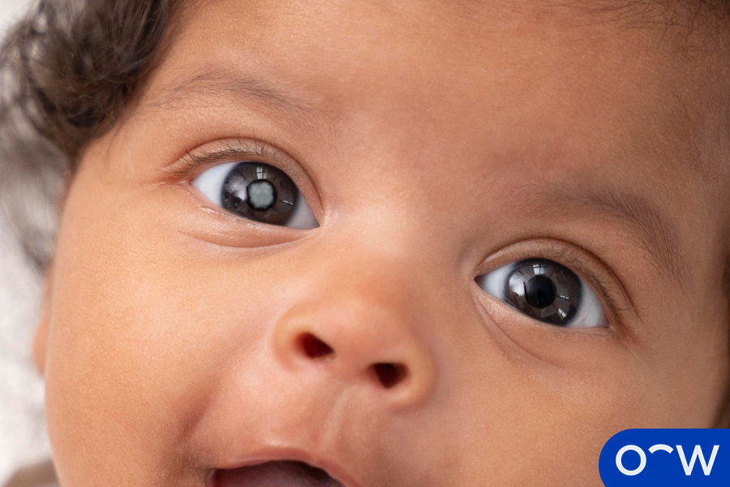

Childhood Cataracts: Definition, Causes, Symptoms, Diagnosis, and
Treatment
Content
What is a Childhood Cataract?
Content

What are the Other Terms for Childhood Cataracts?
Content
How Often Do Cataracts Occur in Children?
Content
What is the Age Range for Childhood Cataracts?
Content
What are the Different Types of Childhood Cataracts?
Content
Congenital cataracts:
Congenital cataracts describe cataracts that are present at birth.
Congenital cataracts may be hereditary or caused by genetic disorders.
Acquired Cataracts:
Acquired cataracts is any cataract that is developed after birth.
Types of acquired cataracts include traumatic cataracts and radiation
cataracts.
1. Congenital Cataracts
Content
2. Acquired Cataracts
Content
What are the Causes of Cataracts in Children?
Content
Genetic factors:
Childhood cataracts can be caused by genetic factors which are known
as congenital cataracts as the cataract is present at birth.
Rheumatoid arthritis:
Rheumatoid arthritis in children, known as juvenile idiopathic
arthritis, may cause eye inflammation, leading to a cataract forming
in the child’s eye.
Eye injury:
Cataracts can be caused by an eye injury, which is known as traumatic
cataracts. Eye injuries can include blunt or penetrating trauma,
radiation and chemical burns.
Pregnancy-related infections:
Pregnancy-related infections include chickenpox, rubella,
cytomegalovirus (CMV) and toxoplasmosis. A pregnancy-related cataract
is categorised as congenital cataracts.
1. Genetic Factors
Content
2. Rheumatoid Arthritis
Content
3. Eye Injury
Content
4. Pregnancy-Related Infections
Content
What are the Symptoms of Childhood Cataracts?
Content
Nystagmus or uncontrollable rhythmic eye movements:
Nystagmus is a symptom that may develop in a child who has cataracts.
Nystagmus is uncontrollable rhythmic eye movements.
Bringing things closer to see:
Childhood cataracts can cause blurry vision, requiring the child to
bring things closer to see clearly.
Sensitivity to light:
Sensitivity to light is a symptom of childhood cataracts which can
cause eye discomfort when looking at bright lights such as lamps and
headlights.
Eye lens becomes cloudy or white:
Some cataracts can be visible through the pupil causing the eye lens
to become cloudy or white.
1. Nystagmus or Uncontrollable Rhythmic Eye Movements
Content
2. Bringing Things Closer to See
Content
3. Sensitivity to Light
Content
4. Eye Lens Becomes Cloudy or White
Content
How are Childhood Cataracts Diagnosed?
Content
What are the Tests or Eye Exams Done to Diagnose Childhood Cataracts?
Content
Visual acuity test:
A visual acuity test assesses the sharpness and clarity of a child’s
vision. For young children who are unable to read, a different chart
will be used with recognisable icons rather than letters.
Slit lamp exam:
A slit lamp exam examines the eyes microscopically for problems or
abnormalities. It involves a microscope with a bright light looking
at different structures of the eye including the lens, cornea and
retina.
Intraocular pressure test:
An intraocular pressure test measures the intraocular pressure of
the eye, which is the pressure inside the eye. This test is also
known as tonometry and is often performed as a part of pretesting.
Fundoscopic exam:
A fundoscopic exam evaluates the back of the eye including the
retina. This exam may require the child’s pupils to be dilated for
better visualisation for the optometrist to examine using an
ophthalmoscope.
Who Diagnoses Childhood Cataracts, Optometrist, or Ophthalmologist?
Content
Are Early Childhood Cataracts Reversible?
Content
How are Childhood Cataracts Treated?
Content
Who Diagnoses Childhood Cataracts, Optometrist, or Ophthalmologist?
Content
What is the Risk of Cataract Surgery in Children?
Content
What are the Age Restrictions for Childhood Cataract surgery?